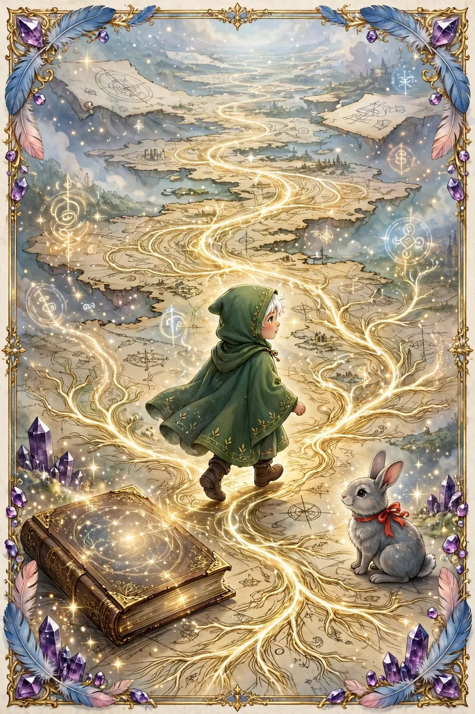

01 / 08
Relato 01El Viaje Onírico de Liam
El Viaje Onírico de Liam. Mientras Elara exploraba su mundo interno en sueños, Liam se sumergió en un sueño que lo llevó a un vasto paisaje de intrincadas rutas y caminos que se extendían hasta donde alcanzaba la vista. En este sueño, Liam se encontró en una especie de mapa viviente, donde los senderos y caminos se dibujaban y desdibujaban con cada paso que daba. El paisaje parecía un vasto territorio en blanco, esperando ser trazado.
Liam caminaba por un sendero que se torcía y retorcía en múltiples direcciones, cada bifurcación representando una decisión importante que debía tomar. Al observar con detenimiento, notó que cada ruta estaba marcada con símbolos antiguos, similares a los que había visto en el templo, pero en una forma más abstracta. Estos símbolos parecían ofrecer pistas sobre cuál camino tomar para alcanzar su destino.
